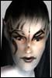

Psychogirl
Leetas
 | Thank you Khamuk. I will contact you in game with some more details and to answer any questions you may have. |
YumYum Crow
Soleet |  All right You've got me curious All right You've got me curiousAll right, this thread has benn giving me pause for thought since i first saw it, but I thought I'd never be able to make the time to develop yet another character to add to my growing repotoire. But I've had a change of heart *evil grin*
I have no character as yet but if you need another nefarious villain to round out your enemies list, give me a tell in game and I'll ditch some old 'toons and make one escpecially for this plot *manic grin*
Send tells to "Fatozzie" and/or "Merryman" if you want another name on your list and we can take it from there. |
Simplehead
Supa Leet
 | I'm removing Ognom from this rp due to a recent ingame problem with a member of endgame. No hard feelings. People are mixing IC and OOC wayyyy to much these days and I won't be a part of it. |
UwensBack
Supa Leet
 | Whoa whoa whoa. I was there. EG didn't start it and you know it. EVERYONE knows it. Even Tarryk was telling you to calm down on air. Don't try to badmouth EG and make it look like we're at fault. |
Simplehead
Supa Leet
| I'm Omni in a room full of clanners at a Neutral party hmm lets see here. ::Ognom slaps himself in the face:: Oh I get it... Me bad you good, you no like Ognom! Ognom Keel you quick little boys and girls go cry to momma. |
UwensBack
Supa Leet
| Oh stop it. Thats pathetic. You were using the same invalid whine at the party. We weren't being biased because you are Omni. ou weren't the only Omni in te room. DOn't act like you are being persecuted, because you weren't. You started a lot of crap and then acted like you were jumped on and were being harrassed. Here's a thought, don't start stuff, don't pick fights, don't insult people or their alliance, and you have problems. Last edited by Uwen on March 1st, 2003 at 12:36 |
Simplehead
Supa Leet
| Shut up and go make some pies little boy. Me not like trolls. |
Psychogirl
Leetas
| Wow. I don't know what happened but I'm sorry to see you change your mind Ognom. I was really hoping that you would be in it. If you ever change your mind let me know.
As far as the others that have said they would take part in this, I'm sorry I have not gotten in touch with you. I have been real busy in RL. But I hope to contact everyone within the next day and try to get this whole thing kicked off next weekend.
Thank you for participating and for your patience. |


 Last Thread Next Thread
Last Thread Next Thread 
 February 24th, 2003 11:07
February 24th, 2003 11:07